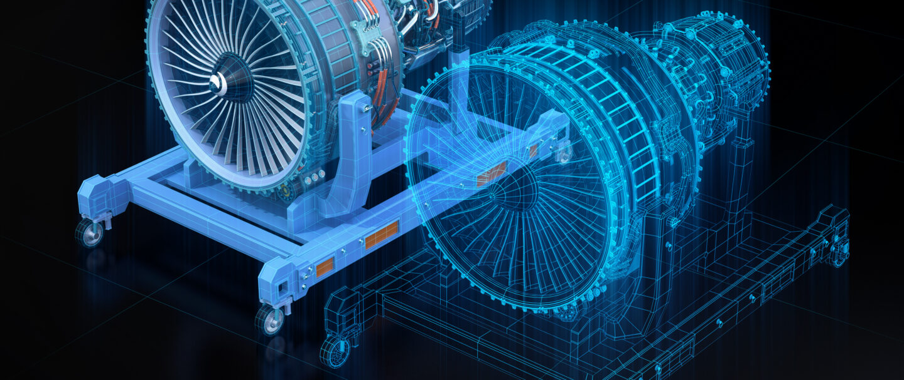
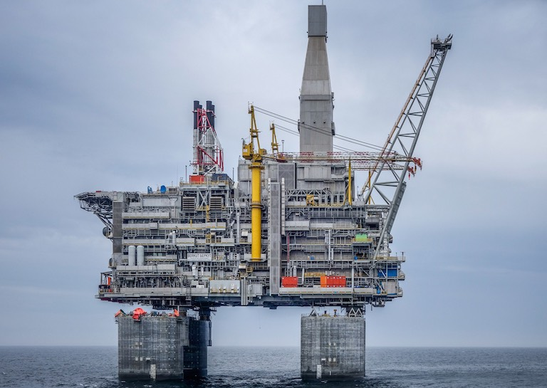

5G Uses Cases
Energy Sector
Sensor Suites
Monitor whole plant miniscule tolerances for pre-emptive
error correction

Bots & Vehicles
- On Demand Surge. CV2X allows fleets to automatically deploy with raw material. Ex. Coal
- In Toxic & Radioactive env, bots can inspect instead of humans. Ex. Fukishima
- Boston Dynamics Spot can patrol remote & hazardous locations. Ex Illwerke Vkw, Austria
Digital Twins

- Simulation of Product in software as is in realtime for monitoring, debugging and predicting.
Ex. Jet Engines on Oil Rigs (Boeing does for aircrafts)
-
Tollerance level for 5G is 100x less than 4G, allowing extremely precise location monitoring in
sensitive equipment & confined spaces
-
Mix Reality Inspection without in person presence. Ex, As already used in construction industry
assisted by UnReal Engine
Wholistic Monitoring: Oil Rigs
Fully Automated Oil Riggs

- Senor Suites + Drones + Digital Twins + Patrol Bots
can be used to make Oil Rigs to be fully
unmanned. potentially saving 100s of lives a year.
-
Pipes & Ships can all be monitored and controlled from remote onland stations.
-
Full automation with realtime Machine Learning with 5G also increases efficiency and revenue
Wholistic Monitoring: Grid
Smart Grids
- Intelligent Distributed Feeder Automation
- Grids Can be monitored for minute/minute usage
- Millisecond-Level Precise Load Control